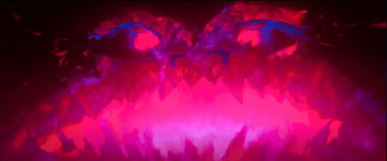

Gwi-Ma is the Demon Lord and the primary antagonist of K-pop Demon Hunters. As the ruler of the demon realm, he commands immense power and is feared by demons and humans alike. His influence extends across generations, and countless demons serve him without question.
Gwi-Ma grows stronger by collecting human souls. Each soul increases his power and allows his influence to spread further into the human world. Because of this, he constantly seeks new ways to harvest souls and weaken the forces that stand against him.
His ultimate goal is to destroy the Honmoon, the magical barrier that separates the demon realm from the human world. If the Honmoon falls, demons will be free to enter the human world without restriction, allowing Gwi-Ma to expand his control and power.
To achieve this goal, Gwi-Ma creates and commands the Saja Boys, a demon boy group designed to attract fans and gather human souls through their popularity. While millions of people see them as talented idols, the group secretly serves Gwi-Ma's plans and helps him strengthen his hold over both worlds.
Throughout the story, Gwi-Ma manipulates others to achieve his objectives, including Jinu, whose desperate wish for a better life led him into a life-changing pact with the Demon Lord. Through fear, temptation, and promises of power, Gwi-Ma maintains control over his followers and continues his pursuit of the Honmoon's destruction.